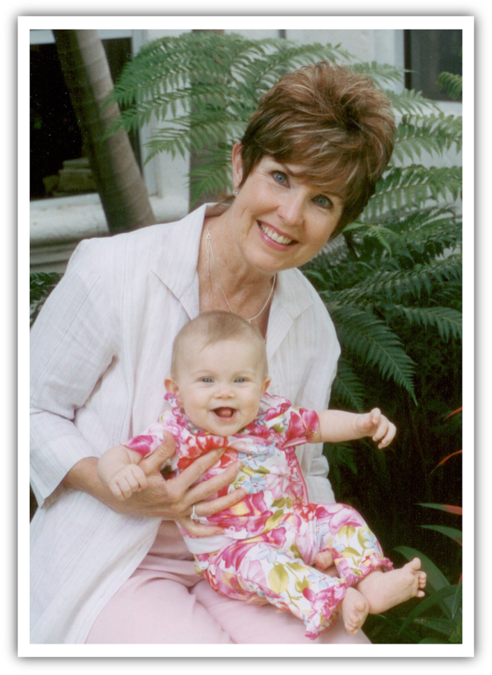

After my mother passed in 2010 from ALS, I vowed to do something each
year to help others suffering from this disease. Then one of my friends was diagnosed.
It was one thing to watch my mother, who had lived a full life, pass away; it has been
even more heart-wrenching to see a young mother of four children figure out how to live
each day while remaining positive and grateful. This year all of the proceeds from the
annual ALS benefit will go to this amazing woman, Whitney Cottrell Hill, as she moves
into the next phase of this disease by hiring an aid to assist her during the day.
Financially this has been next to impossible as this assistance is not covered by
insurance, however, she is now at a point where she is too much of a fall risk to be
left alone. Calling out to each of you to consider helping me in supporting
Whitney!
Arthea
Arthea Buckman Paulos, 63, passed away peacefully in her sleep surrounded
by loved ones on August 24, 2010 following a courageous battle with Lou Gehrig’s Disease
(ALS). Arthea was born on January 29, 1947 in Savanna, Illinois to Arthur and Dorothea
Buckman. After Arthea’s birth, she and her family moved to Kankakee, Illinois where she
was raised alongside her four younger siblings. Arthea graduated from Northwestern School
of Dental Hygiene in 1966. She married Peter E. Paulos on September 11, 1966 and they had
three beautiful children together in Salt Lake City, Utah where they made it their home
for 34 years. Arthea loved being a “grammy” to her six beautiful grandchildren. She was a
loyal friend, a loving mother and grandmother and a constant presence in her children’s
lives. Arthea was a second mom to many and will be dearly missed!